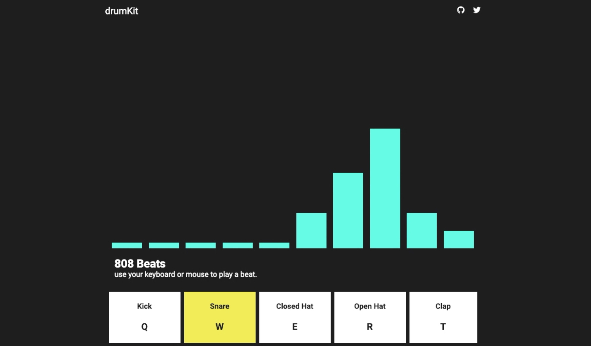
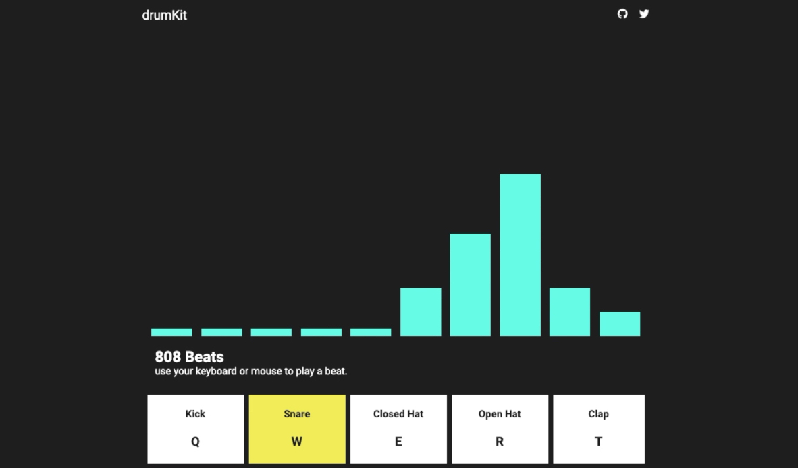

DrumKit
- bootcamp project
- HTML & SCSS fundamentals
- jQuery
- Anime.js
The DrumKit project is an ode to my love of music, specifically electronic genres. With the task of creating a jQuery project in Juno's Web Development Immersive bootcamp, I focused on creating an attainable minimum viable product (MVP) within a few days turnover. A stretch goal that I completed once bootcamp wrapped up was the use of animations, driven by the library anime.js.
 
